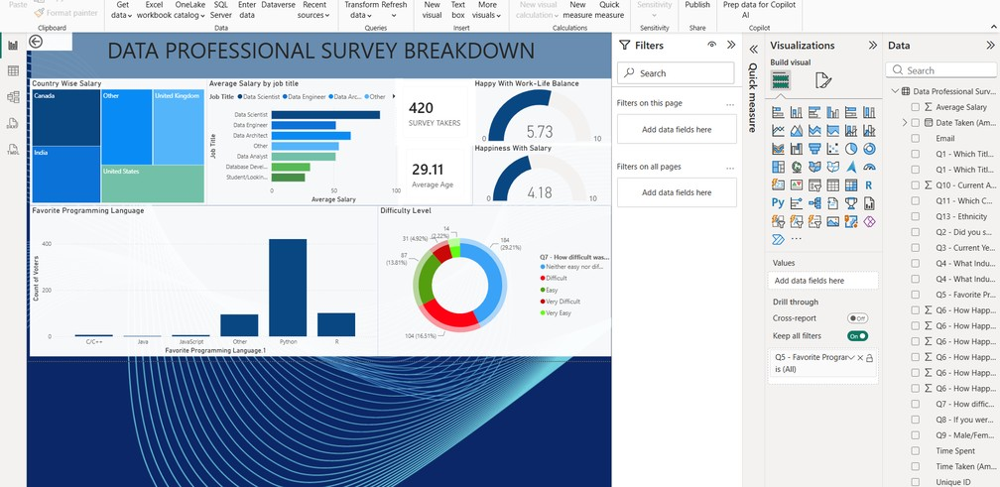

Cybersecurity roots.
A data analyst's mindset.
B.E. Cybersecurity Engineering, Chandigarh University — building
toward AI/ML engineering and, eventually, an AI-security-focused startup.

I'm a final-year Cybersecurity Engineering student (SGPA 8.47, University Rank 27) at Chandigarh University, currently repositioning toward data analytics as my primary career path — with AI/ML engineering as the next step, and AI security as a longer-term specialization. That security background shapes how I work with data: I care as much about whether a number is correct and reproducible as I do about whether a chart looks good.
Most of my recent work lives in Excel, SQL, Power BI, and Tableau — cleaning messy real-world datasets, building DAX measures, and designing dashboards that someone outside the analysis can actually use to make a decision. On the side, I've been going deeper into Python and applied ML: a RAG-based semantic search system over thousands of CVE records, and a phishing-email classifier built with Scikit-learn. I also post regularly about what I'm learning — Excel functions, DAX, dashboard design choices — because writing things down publicly is the fastest way I've found to actually understand them.
Education
- B.E., Cybersecurity Engineering — Chandigarh University, Punjab, India (Expected July 2027)
SGPA: 8.47/10 | University Rank: 27
Technical Skills
- Languages: Python, SQL (MySQL)
- Data Analysis & Visualization: Excel (Pivot Tables, XLOOKUP/VLOOKUP, Conditional Formatting), Power BI (DAX, Power Query), Tableau, ETL, Pandas, NumPy, Matplotlib, Seaborn
- AI/ML: Scikit-learn, RAG (LangChain, FAISS, HuggingFace), FastAPI, prompt engineering
- Databases & Cloud: MySQL, AWS (EC2, S3, IAM)
- Tools: Git/GitHub, GitHub Actions, Docker, Jupyter Notebook
Certifications
- CompTIA Security+
- Google Cybersecurity Professional Certificate
- Python for Everybody — University of Michigan (Coursera)
Beyond Data
Outside of analytics, I build things end-to-end: freelance video ad production for D2C and luxury brands, small business websites, and an MQL5 Expert Advisor implementing the ICT Market Maker Model for algorithmic trading on MT5. I like projects that force me to own a result from raw input to finished output.